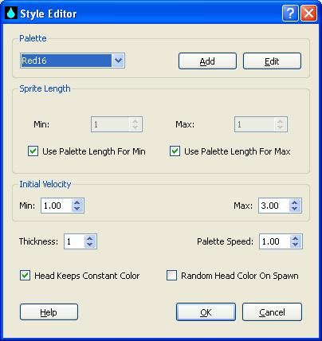

Style Editor

The Basics
Rain styles control things such as coloring, sprite length,
sprite thickness, initial velocity, and the secondary rotational speed
of the palette. The sprite coloring comes from a palette specified
in the drop-down box at the top. Each rain sprite must have a length,
which is randomly picked from between the Min and Max length parameters.
When animating the sprite, it will "fall from the sky" starting at
a velocity chosen at random between Min and Max velocity and then
accelerate toward the "ground" according to the Gravity setting in the
Profile Editor. As the
sprite falls, it can be configured such that the "head" keeps the
same palette color index, or it can rotate through the palette.
When the sprite is spawned, it can be configured such that
the head color palette index is randomly chosen or will always
be color index 0. Lastly, the sprite color can be rotated
through the palette's secondary color axis at the speed indicated
by the Palette Speed. The initial value for the secondary color index
is dependent upon the Y Palette Sync setting in the
Profile Editor.
For more information on palettes, please refer to the help for the
Palette Editor.
The Nitty-Gritty
Here we will discuss the specifics of each parameter.
- Palette - This is the palette to use to color the
sprites. Use the drop-down list to select one of
the available palettes, or you can add a new palette by
clicking the "Add" button to the right. Clicking the "Edit"
button will edit the palette currently selected. For more
information on palettes and the Palette Editor, please
click here. For
more suggestions on designing a palette, please see below.
- Min Sprite Length - This is the minimum allowed
length of the sprite. If you wish to use the length of the
palette for the minimum length, check "Use Palette For Min". If
the length of the sprite exceeds the length of the palette, the
palette will wrap around.
- Use Palette Length For Min - When this is checked,
the Min Sprite Length will be set to the length of the palette.
This happens at render time, so if the palette changes, so
will the minimum length of the sprite.
- Max Sprite Length - This is the maximum allowed length
of the sprite. If you wish to use the length of the palette for
the maximum length, check "Use Palette For Max". If the length of
the sprite exceeds the length of the palette, the palette will wrap
around.
- Use Palette Length For Max - When this is checked,
the Max Sprite Length will be set to the length of the palette.
This happens at render time, so if the palette changes, so
will the maximum length of the sprite.
- Min Initial Velocity - This is the minimum allowed initial
velocity that the sprite can have.
- Max Initial Velocity - This is the maximum allowed initial
velocity that the sprite can have.
- Thickness - This is the thickness of the sprite. This will
also effect the length of the sprite. This is essentially a multiplier
that determines how many pixels each color segment will be.
- Palette Speed - This is the speed at which the sprite colors
will rotate through the secondary palette.
- Head Keeps Constant Color - When this box is checked, the
sprite's head will maintain the same palette primary-axis index as it
moves, as opposed to rotating through the primary axis. This will
not affect the rotation through the secondary palette axis.
- Random Head Color On Spawn - When this box is checked, the
sprite's head palette primary-axis index will be randomly chosen, as
opposed to always starting out at index 0.
Palette Considerations
Palette design is a bit of an artform, but some guidelines
that I stick to are as follows:
- Stick to a small number of "key" colors, say 3-5.
- Keep a consistent amount of undefined colors between
each "key" color, say 7 or 15.
- Utilize color interpolation and color wrapping, especially
with "Head Keeps Constant Color" disabled.
- Have fun doing it!
Where To Look For More Info
For more help, feel free to visit us at
http://sites.google.com/site/idlescreenproject/, where
you can take advantage of the FAQS, Wiki, and user lists.
Back To the Main Page